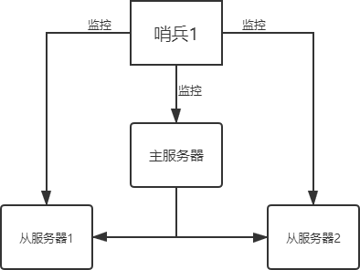

Redis集群：Sentinel哨兵模式（详细图解）
在 Redis 主从复制模式中，因为系统不具备自动恢复的功能，所以当主服务器（master）宕机后，需要手动把一台从服务器（slave）切换为主服务器。在这个过程中，不仅需要人为干预，而且还会造成一段时间内服务器处于不可用状态，同时数据安全性也得不到保障，因此主从模式的可用性较低，不适用于线上生产环境。
Redis 官方推荐一种高可用方案，也就是 Redis Sentinel 哨兵模式，它弥补了主从模式的不足。Sentinel 通过监控的方式获取主机的工作状态是否正常，当主机发生故障时， Sentinel 会自动进行 Failover（即故障转移），并将其监控的从机提升主服务器（master），从而保证了系统的高可用性。
在上图过程中，哨兵主要有两个重要作用：
在实际生产情况中，Redis Sentinel 是集群的高可用的保障，为避免 Sentinel 发生意外，它一般是由 3～5 个节点组成，这样就算挂了个别节点，该集群仍然可以正常运转。其结构图如下所示：

图2：多哨兵模式
上图所示，多个哨兵之间也存在互相监控，这就形成了多哨兵模式，现在对该模式的工作过程进行讲解，介绍如下：
对上对述过程做简单总结：
Sentinel 负责监控主从节点的“健康”状态。当主节点挂掉时，自动选择一个最优的从节点切换为主节点。客户端来连接 Redis 集群时，会首先连接 Sentinel，通过 Sentinel 来查询主节点的地址，然后再去连接主节点进行数据交互。当主节点发生故障时，客户端会重新向 Sentinel 要地址，Sentinel 会将最新的主节点地址告诉客户端。因此应用程序无需重启即可自动完成主从节点切换。
Redis 官方推荐一种高可用方案，也就是 Redis Sentinel 哨兵模式，它弥补了主从模式的不足。Sentinel 通过监控的方式获取主机的工作状态是否正常，当主机发生故障时， Sentinel 会自动进行 Failover（即故障转移），并将其监控的从机提升主服务器（master），从而保证了系统的高可用性。
哨兵模式原理
哨兵模式是一种特殊的模式，Redis 为其提供了专属的哨兵命令，它是一个独立的进程，能够独立运行。下面使用 Sentinel 搭建 Redis 集群，基本结构图如下所示：

图1：哨兵基本模式
图1：哨兵基本模式
在上图过程中，哨兵主要有两个重要作用：
-
第一：哨兵节点会以每秒一次的频率对每个 Redis 节点发送
PING命令，并通过 Redis 节点的回复来判断其运行状态。 - 第二：当哨兵监测到主服务器发生故障时，会自动在从节点中选择一台将机器，并其提升为主服务器，然后使用 PubSub 发布订阅模式，通知其他的从节点，修改配置文件，跟随新的主服务器。
在实际生产情况中，Redis Sentinel 是集群的高可用的保障，为避免 Sentinel 发生意外，它一般是由 3～5 个节点组成，这样就算挂了个别节点，该集群仍然可以正常运转。其结构图如下所示：
图2：多哨兵模式
上图所示，多个哨兵之间也存在互相监控，这就形成了多哨兵模式，现在对该模式的工作过程进行讲解，介绍如下：
1) 主观下线
主观下线，适用于主服务器和从服务器。如果在规定的时间内(配置参数：down-after-milliseconds)，Sentinel 节点没有收到目标服务器的有效回复，则判定该服务器为“主观下线”。比如 Sentinel1 向主服务发送了PING命令，在规定时间内没收到主服务器PONG回复，则 Sentinel1 判定主服务器为“主观下线”。2) 客观下线
客观下线，只适用于主服务器。 Sentinel1 发现主服务器出现了故障，它会通过相应的命令，询问其它 Sentinel 节点对主服务器的状态判断。如果超过半数以上的 Sentinel 节点认为主服务器 down 掉，则 Sentinel1 节点判定主服务为“客观下线”。3) 投票选举
投票选举，所有 Sentinel 节点会通过投票机制，按照谁发现谁去处理的原则，选举 Sentinel1 为领头节点去做 Failover（故障转移）操作。Sentinel1 节点则按照一定的规则在所有从节点中选择一个最优的作为主服务器，然后通过发布订功能通知其余的从节点（slave）更改配置文件，跟随新上任的主服务器（master）。至此就完成了主从切换的操作。对上对述过程做简单总结：
Sentinel 负责监控主从节点的“健康”状态。当主节点挂掉时，自动选择一个最优的从节点切换为主节点。客户端来连接 Redis 集群时，会首先连接 Sentinel，通过 Sentinel 来查询主节点的地址，然后再去连接主节点进行数据交互。当主节点发生故障时，客户端会重新向 Sentinel 要地址，Sentinel 会将最新的主节点地址告诉客户端。因此应用程序无需重启即可自动完成主从节点切换。
哨兵模式应用
Redis Sentinel 哨兵模式适合于在 Linux 系统中使用，所以下面的应用都基于 Ubuntu 实现。1) 安装sentinel
Sentinel 需要作为插件单独安装，安装方式如下：sudo apt install redis-sentinel
2) 搭建主从模式
接下来，在本地环境使用主从模式搭建一个拥有三台服务器的 Redis 集群，命令如下所示：启动6379的redis服务器作为master主机: sudo /etc/init.d/redis-server start 启动6380的redis服务器，设置为6379的slave: redis-server --port 6380 $ redis-cli -p 6380 127.0.0.1:6380> slaveof 127.0.0.1 6379 OK 启动6381的redis服务器，设置为6379的salve redis-server --port 6381 $ redis-cli -p 6381 127.0.0.1:6381> slaveof 127.0.0.1 6379
3) 配置sentinel哨兵
首先新建 sentinel.conf 文件，并对其进行配置，如下所示：port 26379 Sentinel monitor biancheng 127.0.0.1 6379 1配置文件说明如下：
port 26379 #sentinel监听端口，默认是26379，可以更改 sentinel monitor <master-name> <ip> <redis-port> <quorum>第二个配置项表示：让 sentinel 去监控一个地址为 ip:port 的主服务器，这里的 master-name 可以自定义；<quorum> 是一个数字，表示当有多少个 sentinel 认为主服务器宕机时，它才算真正的宕机掉，通常数量为半数或半数以上才会认为主机已经宕机，<quorum> 需要根据 sentinel 的数量设置。
4) 启动sentienl哨兵
方式一: redis-sentinel sentinel.conf 方式二: redis-server sentinel.conf --sentinel
5) 停止主服务器服务
下面模拟主服务意外宕机的情况，首先直接将主服务器的 Redis 服务终止，然后查看从服务器是否被提升为了主服务器。执行以下命令：#终止master的redis服务 sudo /etc/init.d/redis-server stop执行完上述命令，您会发现 6381 称为了新的 master，而其余节点变成了它的从机，执行命令验证：
127.0.0.1:6381> set webname www.biancheng.net OK哨兵的配置文件 sentinel.conf 也发生了变化：
#port 26379 #sentinel myid 4c626b6ff25dca5e757afdae2bd26a881a61a2b2 # Generated by CONFIG REWRITE dir "/home/biancheng" maxclients 4064 sentinel myid 4c626b6ff25dca5e757afdae2bd26a881a61a2b2 sentinel monitor biancheng 127.0.0.1 6379 1 sentinel config-epoch biancheng 2 sentinel leader-epoch biancheng 2 sentinel known-slave biancheng 127.0.0.1 6379 sentinel known-slave biancheng 127.0.0.1 6380 sentinel known-slave biancheng 127.0.0.1 6381 port 26379 sentinel current-epoch 2如果您想开启多个哨兵，只需配置要多个 sentinel.conf 文件即可，一个配置文件开启一个。
sentinel.conf配置项
下面对 Sentinel 配置文件的其他配置项做简单说明：| 配置项 | 参数类型 | 说明 |
|---|---|---|
| dir | 文件目录 | 哨兵进程服务的文件存放目录，默认为 /tmp。 |
| port | 端口号 | 启动哨兵的进程端口号，默认为 26379。 |
| sentinel down-after-milliseconds | <服务名称><毫秒数(整数)> | 在指定的毫秒数内，若主节点没有应答哨兵的 PING 命令，此时哨兵认为服务器主观下线，默认时间为 30 秒。 |
| sentinel parallel-syncs | <服务名称><服务器数(整数)> | 指定可以有多少个 Redis 服务同步新的主机，一般而言，这个数字越小同步时间越长，而越大，则对网络资源要求就越高。 |
| sentinel failover-timeout | <服务名称><毫秒数(整数)> | 指定故障转移允许的毫秒数，若超过这个时间，就认为故障转移执行失败，默认为 3 分钟。 |
| sentinel notification-script | <服务名称><脚本路径> | 脚本通知，配置当某一事件发生时所需要执行的脚本，可以通过脚本来通知管理员，例如当系统运行不正常时发邮件通知相关人员。 |
| sentinel auth-pass <master-name> <password> | <服务器名称><密码> | 若主服务器设置了密码，则哨兵必须也配置密码，否则哨兵无法对主从服务器进行监控。该密码与主服务器密码相同。 |
关注公众号「站长严长生」，在手机上阅读所有教程，随时随地都能学习。内含一款搜索神器，免费下载全网书籍和视频。

微信扫码关注公众号